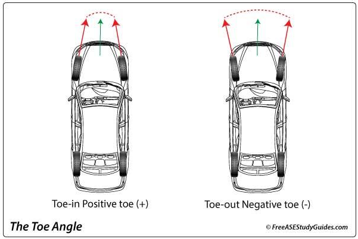
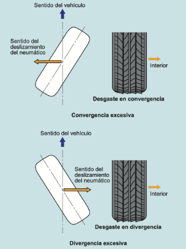
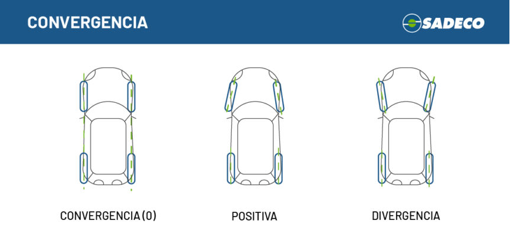

Convergencia/divergencia o toe in/out
La convergencia y divergencia, conocidas también como toe-in y toe-out, son parámetros fundamentales de la geometría de dirección de un vehículo. Este ajuste define el ángulo que forman las ruedas respecto al eje longitudinal del automóvil, observándolas desde la parte superior.

En otras palabras, indica si las ruedas apuntan ligeramente hacia adentro o hacia afuera cuando el vehículo circula en línea recta.
Tipos de convergencia y divergencia
Convergencia (Toe-in)
Existe convergencia cuando las partes delanteras de las ruedas están más cerca entre sí que las traseras. Es decir, las ruedas apuntan ligeramente hacia el interior del vehículo.
Divergencia (Toe-out)
Existe divergencia cuando las partes delanteras de las ruedas están más separadas que las traseras. En este caso, las ruedas apuntan ligeramente hacia el exterior.
Paralelismo o toe cero
Se produce cuando las ruedas están completamente paralelas entre sí y al eje longitudinal del vehículo.
Función de la convergencia y divergencia
El objetivo principal de este ajuste es asegurar que las ruedas rueden correctamente alineadas durante la marcha, compensando las deformaciones y movimientos de la suspensión y dirección mientras el vehículo está en movimiento.
Este parámetro influye directamente en:
- La estabilidad del vehículo.
- La precisión de la dirección.
- El desgaste de los neumáticos.
- El comportamiento en curvas.
- El confort de conducción.
Efectos de la convergencia (Toe-in)
Una ligera convergencia suele utilizarse para mejorar la estabilidad en línea recta. Sus principales ventajas son:
- Mayor estabilidad direccional.
- Mejor control a velocidades altas.
- Menor tendencia del vehículo a desviarse.
Sin embargo, una convergencia excesiva puede producir:
- Desgaste acelerado en la parte exterior de los neumáticos.
- Mayor resistencia al avance.
- Incremento del consumo de combustible.
- Dirección más pesada.
Sus ventajas son:
- Dirección más rápida y sensible.
- Mejor entrada en curvas.
- Mayor agilidad del vehículo.
Pero si es excesiva puede provocar:
- Inestabilidad en línea recta.
- Desgaste en la parte interior de los neumáticos.
- Vibraciones o movimientos irregulares en la dirección.
Importancia del ajuste correcto
La convergencia y divergencia son de los parámetros más importantes en la alineación de ruedas, ya que pequeñas variaciones afectan notablemente al comportamiento del vehículo.
Cuando este ajuste es incorrecto, pueden aparecer síntomas como:
- El vehículo se desvía hacia un lado.
- El volante queda torcido al circular recto.
- Desgaste irregular o rápido de neumáticos.
- Vibraciones en la dirección.
- Pérdida de estabilidad.
Por esta razón, el toe se revisa y ajusta periódicamente en talleres especializados, especialmente después de cambiar neumáticos, componentes de suspensión, sufrir golpes o notar problemas en la conducción.

